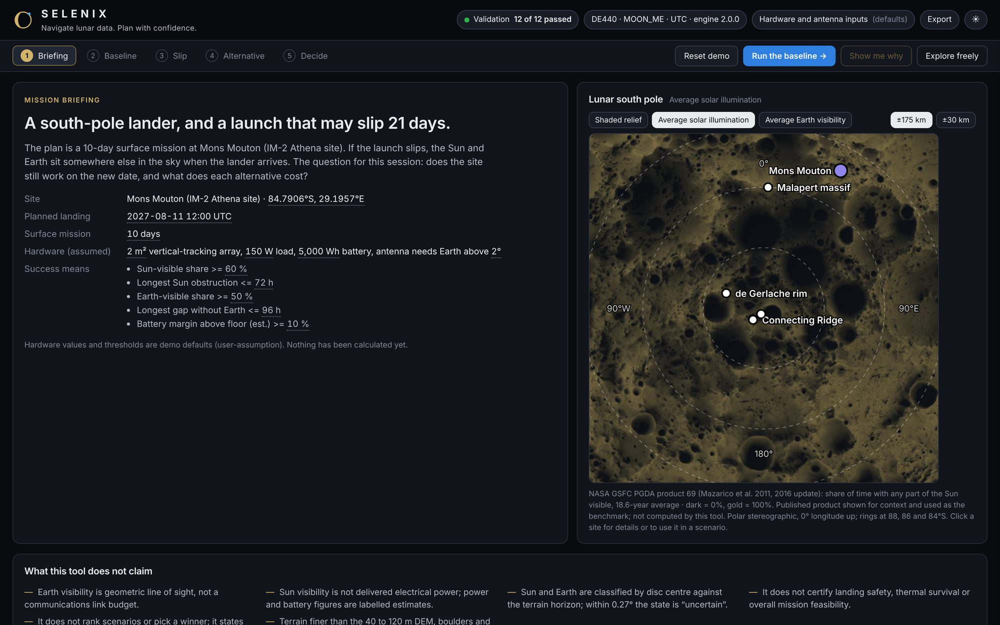
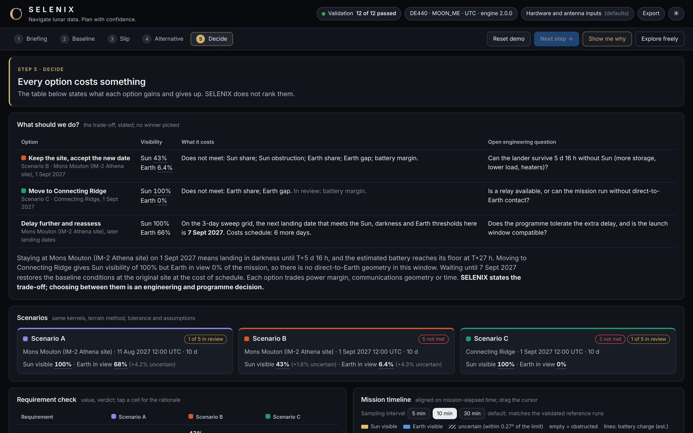
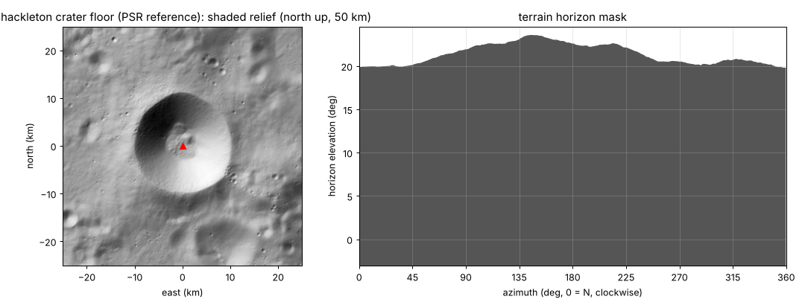
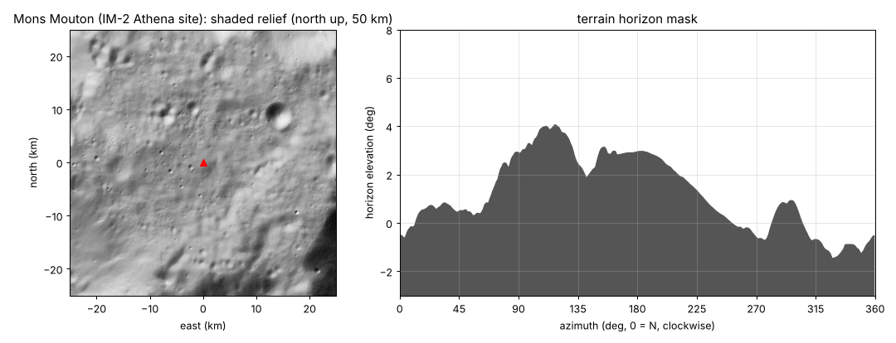
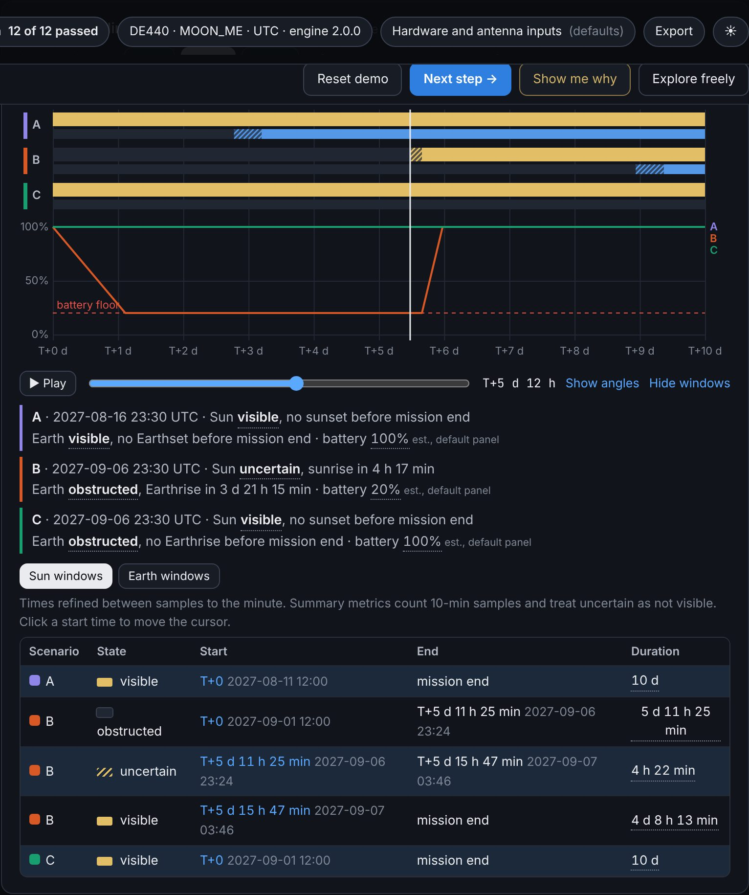
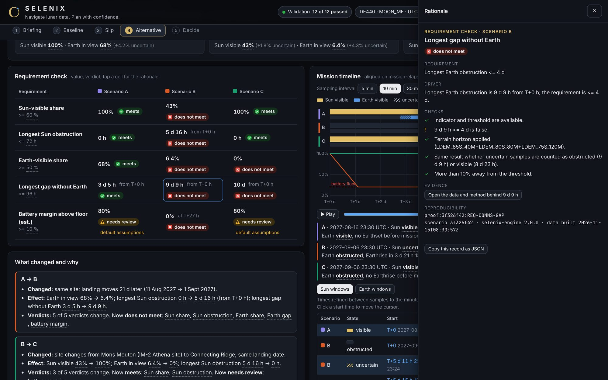
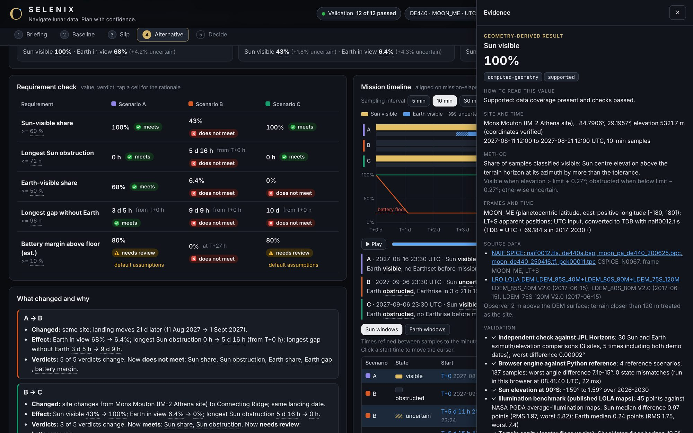
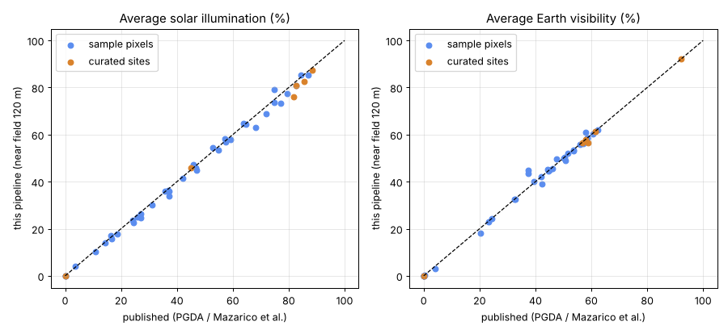

Navigate lunar data. Plan with confidence.
SELENIX team
Ishan Singh · Aisha Jawad
15 November 2026
| Level | Question | Typical source | SELENIX |
|---|---|---|---|
| Celestial geometry | Where are the Sun and Earth relative to the site? | SPICE, JPL Horizons | SPICE adapter, checked against Horizons |
| Terrain visibility | Does local terrain block them? | DEM horizon or viewshed analysis | LOLA horizon masks, three-state classifier |
| Operational meaning | What does that do to power, darkness and comms? | A specialist, by hand | Requirement proofs, mission log, comparison |
Design rule: above the geometric horizon is not visible; visible is not usable power or a working link. Each level is labelled and traceable on its own.
Up to three site/date scenarios on one mission-elapsed-time axis, with identical kernels, terrain method, tolerance and assumptions.
Each scenario against stated requirements: meets, needs review (with the reason), does not meet or unknown. Never “feasible”.
Every number opens its evidence: inputs, data versions, method, tolerance, limitations and validation status.
Earth visibility is geometric line of sight, not a link budget.
Sun visibility is not delivered power; power figures are labelled estimates.
It does not rank options or certify landing safety, thermal survival or feasibility.
Site, date, assumed hardware, requirements. Nothing calculated.
Mons Mouton (IM-2 Athena site), 11 Aug 2027.
Same site, 1 Sep 2027.
Connecting Ridge on the slipped date.
The trade-off, stated. No winner picked.
Reset demo · Next step · Show me why are always visible.

| Requirement (change-spec defaults) | A | B | C |
|---|---|---|---|
| Sun-visible share ≥ 60 % | meets | does not meet | meets |
| Longest Sun obstruction ≤ 72 h | meets | does not meet | meets |
| Earth-visible share ≥ 50 % | meets | does not meet | does not meet |
| Longest gap without Earth ≤ 96 h | meets | does not meet | does not meet |
| Battery margin above floor (est.) ≥ 10 % | needs reviewdefault assumptions | does not meet | needs reviewdefault assumptions |
SELENIX states the trade-off. Choosing is an engineering and programme decision.

One self-contained HTML file (about 2.2 MB) holds the data, engine and UI. No server, works offline, deploys as static files (Vercel, GitHub Pages).
| Source | Product / version | Used for |
|---|---|---|
| NAIF SPICE | naif0012.tls · de440s.bsp · moon_pa_de440_200625.bpc · moon_de440_250416.tf · pck00011.tpc | Sun and Earth geometry in MOON_ME, 2026–2030 |
| LRO LOLA (PDS) | LDEM_85S_40M · LDEM_80S_80M · LDEM_75S_120M (V2.0) | Terrain horizon masks, site elevations, shaded relief |
| NASA GSFC PGDA | AVGVISIB_85S_060M_201608 (+ _EARTH) · product 69 | Illumination benchmark, site coordinates, map layers |
| JPL Horizons | API 1.2 · DE441 | Independent geometry check (30 comparisons) |
| LROC | IM-2 Athena position (image 1408) | Verified Mons Mouton coordinates |
| ISRO | Chandrayaan-3 Shiv Shakti point | Lower-latitude reference, terrain unavailable |
Context and inspection: LROC QuickMap, NASA Moon Trek, CSA Moon exploration.


0.27° is the Sun's angular radius: the disc is partly cut inside this band, and it matches the scale of terrain-bin error.

Each verdict is a proof object with ordered checks:



Same quantity at the same 45 pixels: share of hourly steps over 18.6 years with any part of the disc visible.
| Near field | Sun median | Sun RMS | Earth median | Earth RMS |
|---|---|---|---|---|
| 0 m | 1.78 | 9.94 | 0.3 | 3.39 |
| 120 m (used) | 0.97 | 1.97 | 0.24 | 1.75 |
| 300 m | 0.89 | 3.67 | 0.22 | 2.39 |
Finding: metre-scale relief within a few DEM cells dominated ridge crests. Excluding the nearest 120 m fixed it. Median is sub-percent; individual points reach 5.82 points.
| Existing capability | Primary purpose | What SELENIX adds |
|---|---|---|
| NAIF SPICE | Geometry toolkit; needs programming | Packaged for a site, a mission window and a comparison |
| JPL Horizons | Ephemerides on request; no terrain | Used as an independent check, combined with terrain |
| LOLA DEMs, PGDA maps | Topography; long-term illumination averages | Mission-specific windows and worst cases for a chosen date |
| LROC QuickMap, Moon Trek | Imagery and terrain exploration | Time-dependent Sun/Earth visibility against requirements |
| NASA CMS | Lunar mapping, viewshed and illumination analysis | Repeatable site-date reassessment with proofs and evidence |
Three defensible differentiators: site-date reassessment in seconds · paired Sun/Earth terrain visibility on one timeline · comparison with evidence in one workspace.
Scientific reliability: 5 m LOLA site DEMs, DEM-resolution sensitivity, partial-disc model, more validation cases.
Scenario planning: horizon grids for any coordinate, saved and versioned scenarios, finer date sweeps, reporting.
Environment and power: validated panel, battery, thermal and dust models with uncertainty.
Communications: relay orbits, antenna pointing, link budgets, ground-station availability.
Integrated mission support: rover traverse, resources, multi-objective trade studies, collaboration.
Adapters keep this incremental: a new ephemeris, DEM or relay orbit implements the same interface; engine, checker and UI do not change.
Navigate lunar data. Plan with confidence.
Ishan Singh
Aisha Jawad
NASA Space Apps 2026 · Data: NAIF SPICE, LRO LOLA, NASA GSFC PGDA, JPL Horizons, LROC